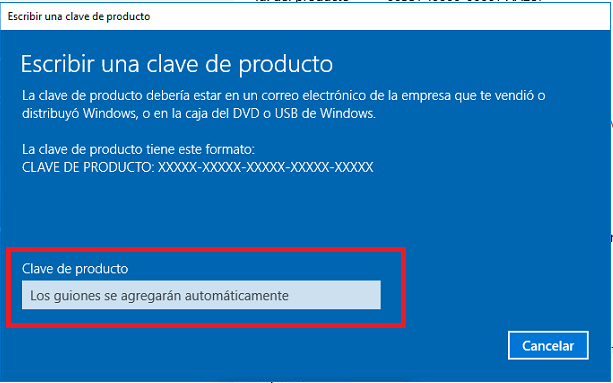

⠀
*Procesador: Procesador a 1 GHz o más rápido o sistema en un chip (SoC). *RAM: 1 GB para 32 bits o 2 GB para 64 bits. *Espacio en disco duro: 16 GB para un SO de 32 bits o 32 GB para un SO de 64 bits. *Tarjeta gráfica: DirectX 9 o posterior con un controlador WDDM 1.0. *Pantalla: Resolución mínima de 800×600. *Conexión a Internet.⠀
Existen varias formas de instalar windows en nuestras computadoras, pero estas dos son las mas rapidas y eficaces.⠀
Como casi todo el mundo sabe, el sistema operativo de Microsoft es un sistema de pago que requiere su activación a través de una licencia. Sin embargo, desde hace tiempo es posible probarlo gratis en un corto un tiempo. Algo que con la llegada de Windows 10 cambió, ya que ofrece la posibilidad de instalar el sistema en nuestro ordenador y poderlo usar de manera indefinida sin necesidad de activarlo. Eso sí, debemos saber que tener Windows 10 sin activar supone encontrarnos con ciertas limitaciones en su funcion.⠀
⠀
Por lo tanto, podemos echar mano de la versión freemium de Windows 10 para instalarla en el equipo y hacer uso de ella sin activar, aunque también podemos intentar activar el sistema con las claves genéricas de Microsoft.⠀
El otro medio de instalacion es con una memoria USB o un DVD. A partir de ellos, podremos hacer una instalación limpia del sistema o bien una reinstalación.⠀
Se necesitara:⠀
*Un ordenador con conexión estable a Internet. *Una unidad flash USB o un DVD. *Una clave de producto, aunque no es necesario para las licencias digitales.⠀
En el caso de que queramos usar una memoria USB, debemos contar con una unidad que cuente con al menos 8 GB de espacio disponible.⠀
lo primero que vamos a hacer es descargar la herramienta de creación de medios, Media Creation Tool.⠀
*Ejecutamos el archivo descargado Media Creation Tool. *Aceptamos los términos. *Elegimos la opción Crear medios de instalación. *Seleccionamos la versión de Windows 10. *Cuando se nos pregunte por el medio a usar, elegimos Unidad Flash USB si lo que queremos es crear un USB de instalación o Archivo ISO si lo que vamos a hacer es crear un DVD.⠀
ya tendremos listo el medio de instalación de Windows 10, por lo que, lo único que nos quedará es configurar nuestro PC para que arranque directamente desde la unidad de memoria. Descargamos e instalamos el programa (Descargar Rufus). Ejecutamos el programa en nuestro escritorio. Elegimos el sistema operativo que queremos utilizar desde el campo Elección de arranque. En el desplegable que se muestra justo al lado elegimos la opción Descarga. A continuación se nos mostrará una pequeña ventana en la que podemos elegir la versión exacta del sistema operativo. Comenzará la descarga del archivo imagen con el sistema elegido. Una vez finalizada, ya podremos crear el USB de arranque con dicho archivo.⠀
En caso de necesitar aun mas ayuda aqui hay un buen video que sera util.